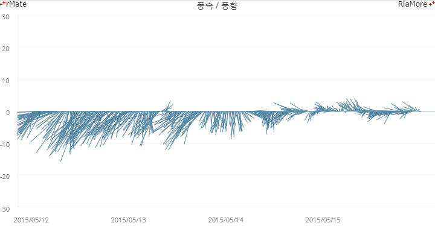
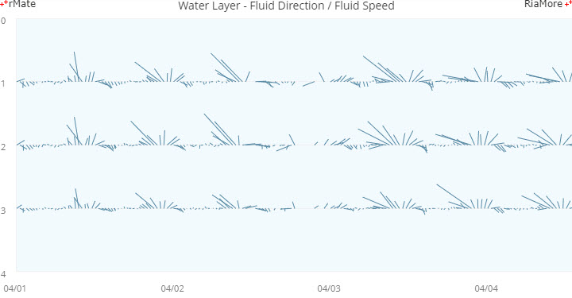

벡터 차트
벡터 차트는 데이터의 속도 값과 각도 값을 선으로 표현하는 차트입니다.
데이터의 속도 값은 선의 길이로 표현하고 데이터의 각도 값은 선이 표시되는 각도 방향으로 표현됩니다.
각도 값, “0” 는 12 시 방향이고 시계 방향으로 각도 값이 증가하게 됩니다.
벡터 차트는 <Vector2DChart> 노드의 series 속성값에 <Vector2DSeries> 노드를 설정하여 생성할 수 있습니다.
다음은 <Vector2DSeries> 노드의 주요 속성에 대한 설명입니다.
| 속성명 |
유효값 (*: 기본값) |
설명 |
| degreeField |
텍스트
|
각도 값이 저장된 데이터 필드명을 지정합니다. |
| velocityField |
텍스트
|
속도 값이 저장된 데이터 필드명을 지정합니다. |
| meterField |
텍스트
|
레이어(층) 값이 저장된 데이터 필드명을 지정합니다. |
| referenceAngle |
숫자
기본값: 0
|
기본 각도 값을 지정합니다.
degreeField 속성 값과 더해진 값이 차트에 표현됩니다.
|
| showArrow |
true, false(*)
|
선에 화살을 표시할지 여부를 설정합니다.
|
다음은 날짜별 바람의 방향과 속도를 표현하는 벡터 차트를 생성하는 코드와 이를 적용해서 출력한 차트의 예제입니다.
<Vector2DChart showDataTips="true">
<horizontalAxis>
<DateTimeAxis id="hAxis" dataUnits="minutes" labelUnits="days" formatter="{dateFmt}" displayName="Date" alignLabelsToUnits="true" displayLocalTime="true" padding="220"/>
</horizontalAxis>
<verticalAxis>
<LinearAxis maximum="30" minimum="-30"/>
</verticalAxis>
<series>
<Vector2DSeries xField="date" velocityField="speed" degreeField="degree">
...
</Vector2DSeries>
</series>
</Vector2DChart>

See the CodePen 알메이트 차트 - 벡터 차트
다중 레이어(시리즈) 벡터 차트
다음은 meterField 속성을 이용하여 다중 레이어(시리즈) 벡터 차트를 생성하는 코드와 이를 적용해서 출력한 차트의 예제입니다.
<Vector2DChart id="chart1" showDataTips="true" mouseSensitivity="5">
...
<series>
<Vector2DSeries xField="date" velocityField="speed1" degreeField="degree1" meterField="meter1">
...
</Vector2DSeries>
<Vector2DSeries xField="date" velocityField="speed2" degreeField="degree2" meterField="meter2">
...
</Vector2DSeries>
<Vector2DSeries xField="date" velocityField="speed3" degreeField="degree3" meterField="meter3">
...
</Vector2DSeries>
</series>
</Vector2DChart>

See the CodePen 알메이트 차트 - 다중 레이어(시리즈) 벡터 차트
위 예제에서는 3 개의 <Vector2DSeries> 노드가 설정되었고, 각각 해당 레이어 정보를 가진 데이터 필드명을 meterField 속성에 지정하였습니다.